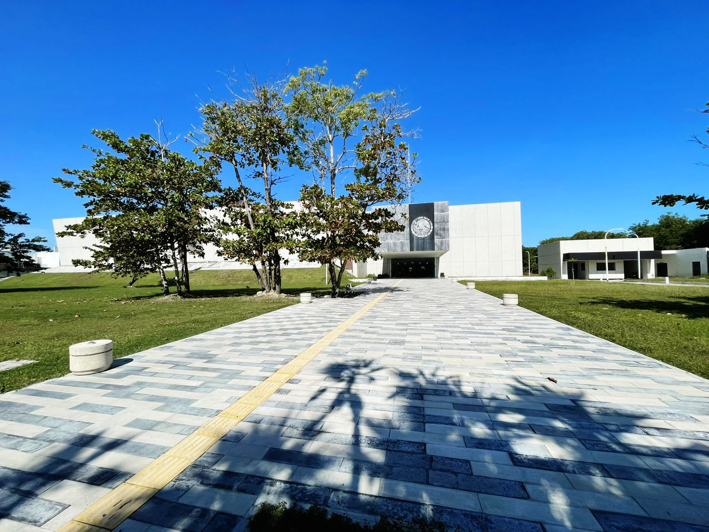

Equipo Jurídico

Josefa Del Jesus Cabrera Cruz

Irma Pavon Ordaz

Juan Manuel Hernandez De La Cruz
Juicios y Trámites
Guía Rápida:
Haz clic en el nombre del trámite para ver la descripción y los documentos necesarios.
Atención a Deudores (Demandas de Pago)
Si recibiste una demanda por no pagar un pagaré, tarjeta de crédito, préstamo personal o caja popular, nosotros te defendemos.
¡ACTÚA RÁPIDO!
Requisitos Obligatorios:
En materia mercantil los plazos son muy cortos (generalmente 8 días para contestar). Acude de inmediato.
- La Demanda: Debes traer el documento original que te entregó el actuario o juzgado.
- Identificación Oficial: INE vigente.
- Comprobantes de Pago: Si ya pagaste algo (recibos, fichas de depósito, transferencias), tráelos todos.
IMPORTANTE:
La asesoría y el abogado son GRATUITOS. Sin embargo, los gastos externos (copias certificadas, peritajes) deben ser cubiertos por el usuario.
Preguntas Frecuentes
1. ¿Necesito abogado?
Sí, es indispensable.
2. ¿Dónde están las oficinas?
Casa de Justicia de Ciudad del Carmen.